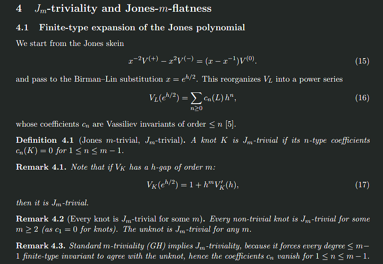
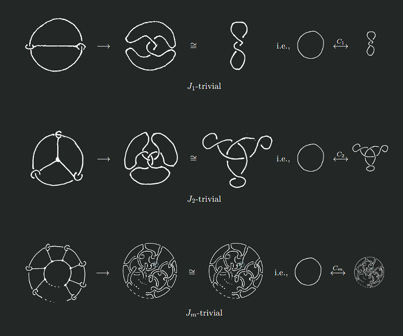
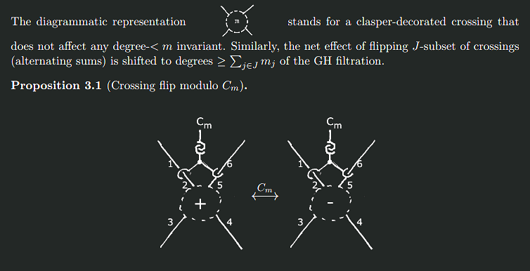
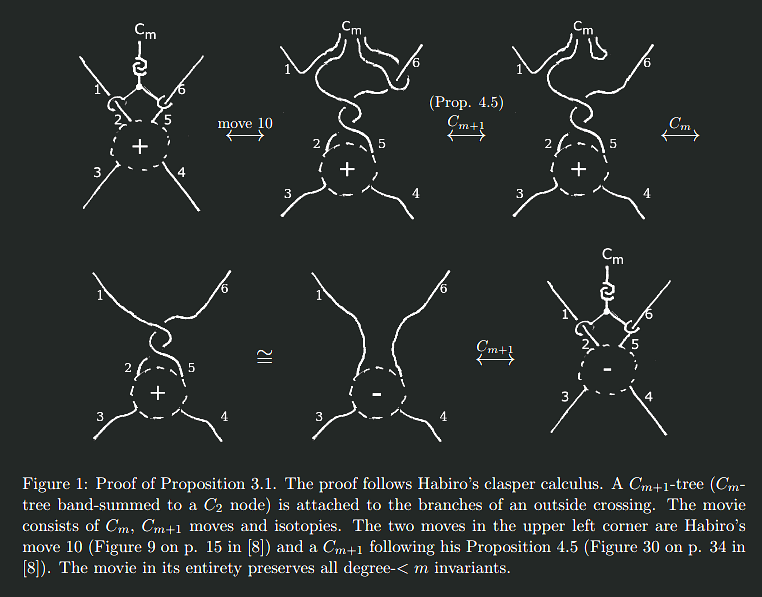
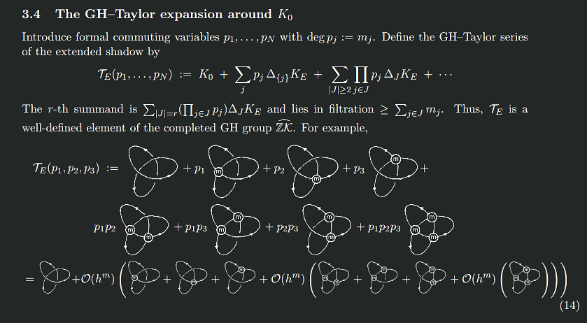
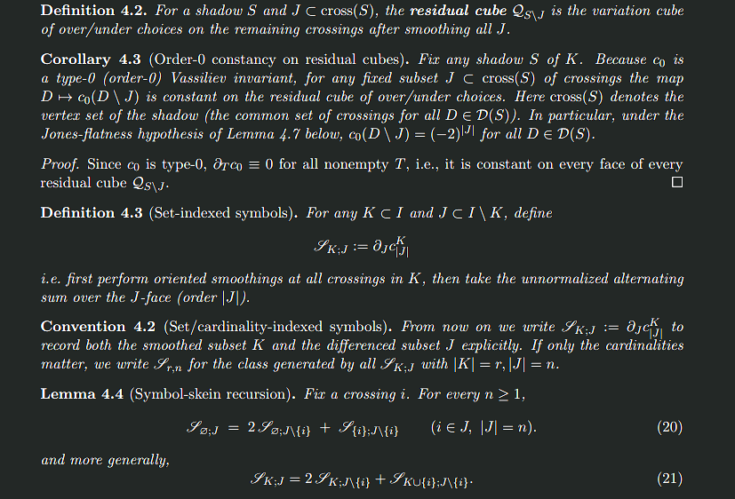
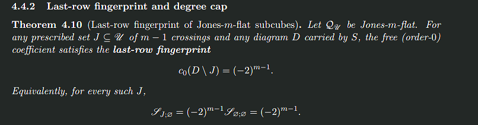
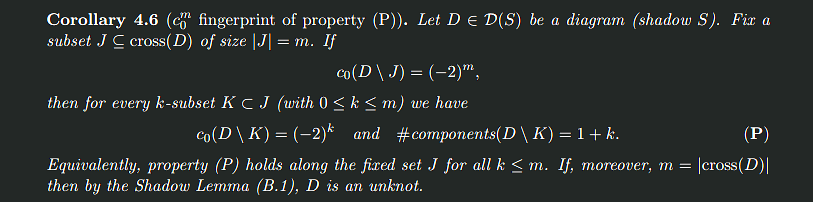
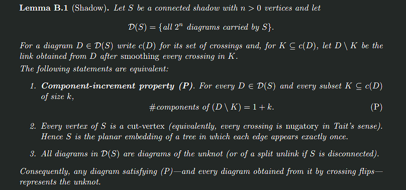
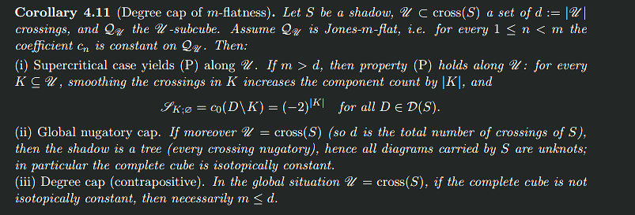

Theoretical Results
Uniform Barrier Theorem
Theorem 5.1: If $K$ is nontrivial and Jones-$m$-trivial, then $m \le N(K)$.
The proof uses extended shadows: decorating each crossing with a degree-$m_j$ clasper makes flips invisible below order $m_j$, creating an $m$-flat family for all order $<m$ layers.
Unknot Detection
Theorem 5.3: If $V_K \equiv 1$, then $K$ is the unknot.
This resolves a longstanding question: the Jones polynomial detects the unknot.
Last-Row Fingerprint
Theorem 4.10: On any Jones-$m$-flat subcube, smoothing any $m-1$ crossings forces $c_0 = (-2)^{m-1}$.
The symbol-skein shows component count increases by exactly one per smoothing—property (P).
Shadow Criterion
Lemma B.1: If property (P) holds on all crossings, the shadow is a tree.
This collapses supercritical faces and establishes the barrier when $m$ exceeds the number of varied crossings.
Visual Proof Sketch
The proof constructs $J_m$-flat families using claspers to make crossing flips invisible below order $m$, then applies the shadow criterion to establish the barrier.
$J_m$-trivial knots
Jones-m-trivial knots have an initial $m$ gap in their finite-type (Birman-Lin / JVP) expansion of the Jones polynomail. Any knot is at least $J_2$-trivial. The unknot is $J_m$-trivial for all $m$. Standard $m$-triviality implies $J_m$-triviality.
Some example of $m$-trivial / $J_m$-trivial knots and their clasper tree representation.
$m$-invisible crossings / crossing flip modulo $C_m$
Extended shadows with claspers make crossing flips $C_m$-moves, invisible to order $<m$ invariants.
The proof employs Habiro's move 10 and Proposition 4.5 (crossing change of a clasper tree edge) as well as isotopies. The movie preserves degree $< m$ finite-type invariants.
$m$-flat shadows/families

Alternating sums over knots are in the sense of Vassiliev, knots having singular/double points.
The family of knots carried by the shadow is encoded by a GH-Taylor expansion whose terms are $m$-graded pieces of the GH filtration (knots having at least $m$ double points). The initial gap imposed by crossing flips modulo $C_m$ leads to the vanishing of order $< m$ symbols (alternating sums over the clasper-decorated crossings). Such a family is said to be $m$-flat.

$m$-flat families/shadow/subcube are objects encoding set of knots whose members, which differ by crossing flips, share an initial $m$-gap in their finite-type expansions. Order $< m$ symbols (alternating sums) vanish on such objects.
Last-row fingerprint of Jones-m-flat shadows/subcubes
The order-0 coefficient $c_0$ in the finite-type expansion of the Jones polynomial encodes the number of link components. This is also the order-0 symbol, an invariant of shadows/subcubes. The Jones symbolic skein relation (recursive computation of its weight system) furnishes the computation of $c_0$ using higher order symbols./ When these vanish, as is the case for $m$-flat shadows, it enforces a last-row fingerprint: the order-0 symbol after oriented smoothing of $m-1$ crossings is $c_0 = (-2)^{m-1}$, i.e., $m$ link components.
The last-row fingerprint of Jones-m-flat subcubes.
Degree cap and obstruction mechanism
When smoothing $k$ crossing always results in $k+1$ link components for any $k$ up to the number of crossings then the shadow is a tree and every diagram is an unknot. This is a consequence of the Shadow lemma.
The Shadow lemma.
The last-row fingerprint of Jones-m-flat subcubes and the Shadow lemma lead to obstruction to $m$ beyond the subcube dimension (equals to the number of crossings in a minimal diagram of a base knot). Unless $m < \dim(Q)$ the shadow is a tree and its carried diagrams are unknots.
Uniform barrier and unknot detection

Proof sketch: Let $S$ be the shadow of a $J_m$-trivial $K$. Make all crossings $m$-invisible by decorating them with claspers. Lemma 3.3 ($m$-flat family) the subcube $Q_S$ is Jones-$m$-flat / $m$-flat (all order-$< m$ symbols vanish). Theorem 4.10 (Last-row fingerprin/t) and Corollary 4.11 (degree cap) show that if $m > |Q_S| = N(K)$ the subcube $Q_S$ becomes completely flat, in which case all knots carried by $S$ are trivial. The clasper decorations occupy the higher degrees in the GH filtration and thus may be trivialized without affecting this conclusion. Therefore, unless a $K$ is trivial, it cannot be $J_m$-trivial with $m > N(K)$.

Jones detects the unknot. Similarly, Vassiliev unknot conjecture follows.